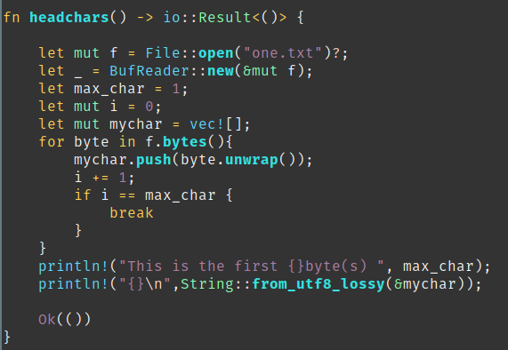
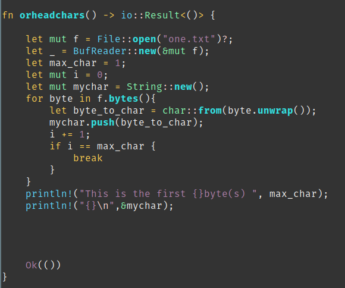

This one was very existing exercise, and I'm always surprise how good Rust language is. Even with the very specifics on memory safety, with Rust, you kind of feel at home, since it has pretty much gathered all the not so recent as well as recent coding style which then gives you the joy to always be able to produce what every you want.
With, in my opinion, the excellent documentation of the standard library, I manage to play with char type and learn on uncharted territories.
In this research journey, my goal this time is to understand how I can read correctly characters form a text file and also understand how to deal with UTF8 and non UTF8 characters.
As I touch on it a bit on my last article, with Rust by default it is UTF8 compliant which is encoded on 1 to 4bytes, where the ASCII are encoded on 1 bytes.
Play with char
So the game was to simulate how head is reading an UTF8 characters
For instance when requesting the 1bytes of the character Ö
$ echo "Öne line, four words." | head -c 1
it will be printed out like this with head from coreutils �
The reason is that Ö is encoded on 2 bytes so to have the full character with head you will need to request 2 bytes
$ echo "Öne line, four words." | head -c 2
$ Ö
The endless story of strings
The second topic which was very interesting to investigate was the Strings.
I have tested two way to do store the character read.
In the first case I'm storing all of them in a vector and then "convert" it to a String or String slice depending on the context with,
String::from_utf8_lossy()
This is how it looks like:

using vector type to store bytes
This is the expected behavior, I'm looking for.
In the second case, I have tested to store all the characters directly in a String and the output result is very different as you can see in the header screenshot.
This is what the function looks like:

Using String type to store bytes
Strings has it own world in programming and I'm very curious to learn more how rust is managing strings.
Next time, I will try to put all of this together to have my own simplified version of head :D
楽しみ！ｗｗｗ
Source code: https://github.com/Vagrantin/lirelechar
Books :